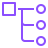
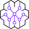
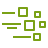

AWS Architecture Icons (07312026)
Local gallery — relative <img> references into assets/aws-icons/. Open this file directly in a browser.
Service — Analytics
AWS Clean Rooms AWS Data Exchange AWS Entity Resolution AWS Glue DataBrew AWS Glue AWS Lake Formation Amazon Athena Amazon CloudSearch Amazon Data Firehose Amazon DataZone Amazon EMR Amazon FinSpace Amazon Kinesis Data Streams Amazon Kinesis Video Streams Amazon Kinesis Amazon Managed Service for Apache Flink Amazon Managed Streaming for Apache Kafka Amazon OpenSearch Service Amazon Redshift Amazon SageMaker
Service — Application-Integration
AWS AppSync AWS B2B Data Interchange AWS Express Workflows AWS Step Functions Amazon AppFlow Amazon EventBridge Amazon MQ Amazon Managed Workflows for Apache Airflow Amazon Simple Notification Service Amazon Simple Queue Service
Service — Artificial-Intelligence
AWS App Studio AWS Deep Learning AMIs AWS Deep Learning Containers AWS DeepRacer AWS Elemental Inference AWS HealthImaging AWS HealthLake AWS HealthOmics AWS HealthScribe AWS Neuron AWS Panorama Amazon Augmented AI A2I Amazon Bedrock AgentCore Amazon Bedrock Amazon CodeGuru Amazon CodeWhisperer Amazon Comprehend Medical Amazon Comprehend Amazon DevOps Guru Amazon Elastic Inference Amazon Forecast Amazon Fraud Detector Amazon Kendra Amazon Lex Amazon Lookout for Equipment Amazon Lookout for Vision Amazon Monitron Amazon Nova Amazon Personalize Amazon Polly Amazon Q Amazon Rekognition Amazon SageMaker AI Amazon SageMaker Ground Truth Amazon SageMaker Studio Lab Amazon Textract Amazon Transcribe Amazon Translate Apache MXNet on AWS PyTorch on AWS TensorFlow on AWS
Service — Blockchain
Amazon Managed Blockchain
Service — Business-Applications
AWS AppFabric AWS End User Messaging AWS Supply Chain AWS Wickr Amazon Chime SDK Amazon Chime Amazon Connect Amazon Pinpoint APIs Amazon Pinpoint Amazon Quick Amazon Simple Email Service Amazon WorkDocs SDK Amazon WorkDocs Amazon WorkMail
Service — Cloud-Financial-Management
AWS Billing Conductor AWS Budgets AWS Cost Explorer AWS Cost and Usage Report AWS FinOps Agent Reserved Instance Reporting Savings Plans
Service — Compute
AWS App Runner AWS Batch AWS Compute Optimizer AWS Elastic Beanstalk AWS Lambda AWS Local Zones AWS Nitro Enclaves AWS Outposts family AWS Outposts rack AWS Outposts servers AWS Parallel Cluster AWS Parallel Computing Service AWS Serverless Application Repository AWS SimSpace Weaver AWS Wavelength Amazon DCV Amazon EC2 Auto Scaling Amazon EC2 Image Builder Amazon EC2 Amazon Elastic VMware Service Amazon Lightsail for Research Amazon Lightsail Bottlerocket Elastic Fabric Adapter
Service — Containers
AWS Fargate Amazon ECS Anywhere Amazon EKS Anywhere Amazon EKS Distro Amazon Elastic Container Registry Amazon Elastic Container Service Amazon Elastic Kubernetes Service Red Hat OpenShift Service on AWS
Service — Customer-Enablement
AWS Activate AWS IQ AWS Managed Services AWS Professional Services AWS Support AWS Training Certification AWS rePost Private AWS rePost
Service — Databases
AWS Database Migration Service Amazon Aurora Amazon DocumentDB Amazon DynamoDB Amazon ElastiCache Amazon Keyspaces Amazon MemoryDB Amazon Neptune Amazon RDS Amazon Timestream Oracle Database at AWS
Service — Developer-Tools
AWS Cloud Control API AWS Cloud Development Kit AWS Cloud9 AWS CloudShell AWS CodeArtifact AWS CodeBuild AWS CodeCommit AWS CodeDeploy AWS CodePipeline AWS Command Line Interface AWS Fault Injection Service AWS Infrastructure Composer AWS Tools and SDKs AWS X Ray Amazon CodeCatalyst Amazon Corretto
Service — End-User-Computing
Amazon WorkSpaces
Service — Front-End-Web-Mobile
AWS Amplify AWS Device Farm Amazon Location Service
Service — Games
Amazon GameLift Servers Amazon GameLift Streams Open 3D Engine
Service — General-Icons
AWS Marketplace / Dark AWS Marketplace / Light
Service — Internet-of-Things
AWS IoT Core AWS IoT Device Defender AWS IoT Device Management AWS IoT Events AWS IoT ExpressLink AWS IoT FleetWise AWS IoT Greengrass AWS IoT SiteWise AWS IoT TwinMaker FreeRTOS
Service — Management-Tools
AWS AppConfig AWS Application Auto Scaling AWS Auto Scaling AWS Backint Agent AWS Chatbot AWS CloudFormation AWS CloudTrail AWS Compute Optimizer AWS Config AWS Console Mobile Application AWS Control Tower AWS DevOps Agent AWS Distro for OpenTelemetry AWS Health Dashboard AWS Launch Wizard AWS License Manager AWS Management Console AWS Organizations AWS Partner Central AWS Proton AWS Resilience Hub AWS Resource Explorer AWS Service Catalog AWS Service Management Connector AWS Sustainability AWS Systems Manager AWS Telco Network Builder AWS Trusted Advisor AWS User Notifications AWS Well Architected Tool Amazon CloudWatch Amazon Managed Grafana Amazon Managed Service for Prometheus
Service — Media-Services
AWS Deadline Cloud AWS Elemental Appliances & Software AWS Elemental Conductor AWS Elemental Delta AWS Elemental Link AWS Elemental Live AWS Elemental MediaConnect AWS Elemental MediaConvert AWS Elemental MediaLive AWS Elemental MediaPackage AWS Elemental MediaStore AWS Elemental MediaTailor AWS Elemental Server AWS Thinkbox Deadline AWS Thinkbox Frost AWS Thinkbox Krakatoa AWS Thinkbox Stoke AWS Thinkbox XMesh Amazon Interactive Video Service Amazon Kinesis Video Streams
Service — Migration-Modernization
AWS Application Discovery Service AWS Application Migration Service AWS Data Transfer Terminal AWS DataSync AWS Mainframe Modernization AWS Migration Evaluator AWS Transfer Family AWS Transform
Service — Networking-Content-Delivery
AWS App Mesh AWS Client VPN AWS Cloud Map AWS Cloud WAN AWS Direct Connect AWS Global Accelerator AWS Interconnect AWS PrivateLink AWS RTB Fabric AWS Site to Site VPN AWS Transit Gateway AWS Verified Access Amazon API Gateway Amazon Application Recovery Controller Amazon CloudFront Amazon Route 53 Amazon VPC Lattice Amazon Virtual Private Cloud Elastic Load Balancing
Service — Quantum-Technologies
Amazon Braket
Service — Satellite
AWS Ground Station
Service — Security-Identity
AWS Artifact AWS Audit Manager AWS Certificate Manager AWS CloudHSM AWS Directory Service AWS Firewall Manager AWS IAM Identity Center AWS Identity and Access Management AWS Key Management Service AWS Network Firewall AWS Payment Cryptography AWS Private Certificate Authority AWS Resource Access Manager AWS Secrets Manager AWS Security Agent AWS Security Hub AWS Security Incident Response AWS Shield AWS Signer AWS WAF Amazon Cloud Directory Amazon Cognito Amazon Detective Amazon GuardDuty Amazon Inspector Amazon Macie Amazon Security Lake Amazon Verified Permissions
Service — Storage
AWS Backup AWS Elastic Disaster Recovery AWS Snowball Edge AWS Snowball AWS Storage Gateway Amazon EFS Amazon Elastic Block Store Amazon FSx for Lustre Amazon FSx for NetApp ONTAP Amazon FSx for OpenZFS Amazon FSx for WFS Amazon FSx Amazon File Cache Amazon S3 on Outposts Amazon Simple Storage Service Glacier Amazon Simple Storage Service
Group
AWS Account AWS Cloud logo AWS Cloud logo / 32 / Dark AWS Cloud AWS Cloud / 32 / Dark AWS IoT Greengrass Deployment Auto Scaling group Corporate data center EC2 instance contents Private subnet Public subnet Region Server contents Spot Fleet Virtual private cloud VPC
Category
Analytics Application Integration Artificial Intelligence Blockchain Business Applications Cloud Financial Management Compute Containers Customer Enablement Customer Experience Databases Developer Tools End User Computing Front End Web Mobile Games Internet of Things Management Tools Media Services Migration Modernization Multicloud and Hybrid Networking Content Delivery Quantum Technologies Satellite Security Identity Serverless Storage
Resource — Analytics
AWS Data Exchange for APIs AWS Glue / AWS Glue for Ray AWS Glue / Crawler AWS Glue / Data Catalog AWS Glue / Data Quality AWS Lake Formation / Data Lake Amazon Athena / Data Source Connectors Amazon CloudSearch / Search Documents Amazon DataZone / Business Data Catalog Amazon DataZone / Data Portal Amazon DataZone / Data Projects Amazon EMR / Cluster Amazon EMR / EMR Engine Amazon EMR / HDFS Cluster Amazon MSK / Amazon MSK Connect Amazon OpenSearch Service / Cluster Administrator Node Amazon OpenSearch Service / Data Node Amazon OpenSearch Service / Index Amazon OpenSearch Service / Observability Amazon OpenSearch Service / OpenSearch Dashboards Amazon OpenSearch Service / OpenSearch Ingestion 
Amazon OpenSearch Service / Traces Amazon OpenSearch Service / UltraWarm Node Amazon Redshift / Auto copy Amazon Redshift / Data Sharing Governance Amazon Redshift / Dense Compute Node Amazon Redshift / Dense Storage Node Amazon Redshift / ML Amazon Redshift / Query Editor v2.0 Amazon Redshift / RA3 Amazon Redshift / Streaming Ingestion
Resource — Application-Integration
Amazon EventBridge Event Amazon EventBridge / Custom Event Bus Amazon EventBridge / Default Event Bus Amazon EventBridge / Pipes Amazon EventBridge / Rule Amazon EventBridge / Saas Partner Event Amazon EventBridge / Scheduler Amazon EventBridge / Schema Registry Amazon EventBridge / Schema Amazon MQ / Broker Amazon Simple Notification Service / Email Notification Amazon Simple Notification Service / HTTP Notification Amazon Simple Notification Service / Topic Amazon Simple Queue Service / Message Amazon Simple Queue Service / Queue
Resource — Artificial-Intelligence
Amazon DevOps Guru / Insights Amazon Rekognition / Image Amazon Rekognition / Video Amazon SageMaker AI / Canvas Amazon SageMaker AI / Geospatial ML Amazon SageMaker AI / Model Amazon SageMaker AI / Notebook Amazon SageMaker AI / Shadow Testing Amazon SageMaker AI / Train Amazon Textract / Analyze Lending 
Amazon Bedrock AgentCore / AI Agent Amazon Bedrock AgentCore / AgentCore Amazon Bedrock AgentCore / Browser Tool Amazon Bedrock AgentCore / Code Interpreter Amazon Bedrock AgentCore / Evaluations Amazon Bedrock AgentCore / Gateway Amazon Bedrock AgentCore / Identity Amazon Bedrock AgentCore / Memory Amazon Bedrock AgentCore / Observability Amazon Bedrock AgentCore / Policy Engine Amazon Bedrock AgentCore / Runtime
Resource — Blockchain
Amazon Managed Blockchain / Blockchain
Resource — Business-Applications
Amazon Pinpoint / Journey Amazon Simple Email Service / Email
Resource — Compute
AWS Elastic Beanstalk / Application AWS Elastic Beanstalk / Deployment AWS Lambda / Lambda Function Amazon EC2 / AMI Amazon EC2 / AWS Microservice Extractor for .NET Amazon EC2 / Auto Scaling Amazon EC2 / DB Instance Amazon EC2 / Elastic IP Address Amazon EC2 / Instance with CloudWatch Amazon EC2 / Instance Amazon EC2 / Instances Amazon EC2 / Rescue Amazon EC2 / Spot Instance
Resource — Containers
Amazon Elastic Container Registry / Image Amazon Elastic Container Registry / Registry Amazon Elastic Container Service / Container 1 Amazon Elastic Container Service / Container 2 Amazon Elastic Container Service / Container 3 Amazon Elastic Container Service / CopiIoT CLI Amazon Elastic Container Service / ECS Service Connect Amazon Elastic Container Service / Service Amazon Elastic Container Service / Task Amazon Elastic Kubernetes Service / EKS on Outposts
Resource — Databases
AWS Database Migration Service / Database migration workflow or job Amazon Aurora Instance Amazon Aurora MariaDB Instance Alternate Amazon Aurora MariaDB Instance Amazon Aurora MySQL Instance Alternate Amazon Aurora MySQL Instance Amazon Aurora Oracle Instance Alternate Amazon Aurora Oracle Instance Amazon Aurora PIOPS Instance Amazon Aurora PostgreSQL Instance Alternate Amazon Aurora PostgreSQL Instance Amazon Aurora SQL Server Instance Alternate Amazon Aurora SQL Server Instance Amazon Aurora / Amazon Aurora Instance alternate Amazon Aurora / Amazon RDS Instance Aternate Amazon Aurora / Amazon RDS Instance Amazon Aurora / Trusted Language Extensions for PostgreSQL Amazon DocumentDB / Elastic Clusters Amazon DynamoDB / Amazon DynamoDB Accelerator Amazon DynamoDB / Attribute Amazon DynamoDB / Attributes Amazon DynamoDB / Global secondary index Amazon DynamoDB / Item Amazon DynamoDB / Items Amazon DynamoDB / Standard Access Table Class Amazon DynamoDB / Standard Infrequent Access Table Class Amazon DynamoDB / Stream Amazon DynamoDB / Table Amazon ElastiCache / Cache Node Amazon ElastiCache / ElastiCache for Memcached Amazon ElastiCache / ElastiCache for Redis Amazon ElastiCache / ElastiCache for Valkey Amazon RDS Proxy Instance Alternate Amazon RDS Proxy Instance Amazon RDS / Blue Green Deployments Amazon RDS / Multi AZ DB Cluster Amazon RDS / Multi AZ Amazon RDS / Optimized Writes Amazon RDS / Trusted Language Extensions for PostgreSQL
Resource — Developer-Tools
AWS Cloud9 / Cloud9
Resource — Front-End-Web-Mobile
AWS Amplify / AWS Amplify Studio Amazon Location Service / Geofence Amazon Location Service / Map Amazon Location Service / Place Amazon Location Service / Routes Amazon Location Service / Track
Resource — General-Icons
AWS Management Console / 48 / Light Alert / 48 / Light Authenticated User / 48 / Light Camera / 48 / Light Chat / 48 / Light Client / 48 / Light Cold Storage / 48 / Light Credentials / 48 / Light Data Stream / 48 / Light Data Table / 48 / Light Database / 48 / Light Disk / 48 / Light Document / 48 / Light Documents / 48 / Light Email / 48 / Light Firewall / 48 / Light Folder / 48 / Light Folders / 48 / Light Forums / 48 / Light Gear / 48 / Light Generic Application / 48 / Light Git Repository / 48 / Light Globe / 48 / Light Internet alt1 / 48 / Light Internet alt2 / 48 / Light Internet / 48 / Light JSON Script / 48 / Light Logs / 48 / Light Magnifying Glass / 48 / Light Metrics / 48 / Light Mobile client / 48 / Light Multimedia / 48 / Light Office building / 48 / Light Programming Language / 48 / Light Question / 48 / Light Recover / 48 / Light SAML token / 48 / Light SDK / 48 / Light SSL padlock / 48 / Light Server / 48 / Light Servers / 48 / Light Shield / 48 / Light Source Code / 48 / Light Tape storage / 48 / Light Toolkit / 48 / Light User / 48 / Light Users / 48 / Light
Resource — IoT
AWS IoT Core / Device Advisor AWS IoT Core / Device Location AWS IoT Device Defender / IoT Device Jobs AWS IoT Device Management / Fleet Hub AWS IoT Device Tester AWS IoT Greengrass / Artifact AWS IoT Greengrass / Component Machine Learning AWS IoT Greengrass / Component Nucleus AWS IoT Greengrass / Component Private AWS IoT Greengrass / Component Public AWS IoT Greengrass / Component AWS IoT Greengrass / Connector AWS IoT Greengrass / Interprocess Communication AWS IoT Greengrass / Protocol AWS IoT Greengrass / Recipe 
AWS IoT Greengrass / Stream Manager AWS IoT Hardware Board AWS IoT Rule AWS IoT SiteWise / Asset Hierarchy AWS IoT SiteWise / Asset Model AWS IoT SiteWise / Asset Properties AWS IoT SiteWise / Asset AWS IoT SiteWise / Data Streams AWS IoT / Action AWS IoT / Actuator AWS IoT / Alexa / Enabled Device AWS IoT / Alexa / Skill AWS IoT / Alexa / Voice Service AWS IoT / Certificate AWS IoT / Desired State AWS IoT / Device Gateway AWS IoT / Echo AWS IoT / Fire TV / Stick AWS IoT / Fire / TV AWS IoT / HTTP2 Protocol AWS IoT / HTTP / Protocol AWS IoT / Lambda / Function AWS IoT / LoRaWAN Protocol AWS IoT / MQTT / Protocol AWS IoT / Over Air Update AWS IoT / Policy AWS IoT / Reported State AWS IoT / Sailboat AWS IoT / Sensor AWS IoT / Servo AWS IoT / Shadow AWS IoT / Simulator AWS IoT / Thing / Bank AWS IoT / Thing / Bicycle AWS IoT / Thing / Camera AWS IoT / Thing / Car AWS IoT / Thing / Cart AWS IoT / Thing / Coffee Pot AWS IoT / Thing / Door Lock AWS IoT / Thing / Factory AWS IoT / Thing / FreeRTOS Device AWS IoT / Thing / Generic AWS IoT / Thing / House AWS IoT / Thing / Humidity Sensor AWS IoT / Thing / Industrial PC AWS IoT / Thing / Lightbulb AWS IoT / Thing / Medical Emergency AWS IoT / Thing / PLC AWS IoT / Thing / Police Emergency AWS IoT / Thing / Relay AWS IoT / Thing / Stacklight AWS IoT / Thing / Temperature Humidity Sensor AWS IoT / Thing / Temperature Sensor AWS IoT / Thing / Temperature Vibration Sensor AWS IoT / Thing / Thermostat AWS IoT / Thing / Travel AWS IoT / Thing / Utility AWS IoT / Thing / Vibration Sensor AWS IoT / Thing / Windfarm AWS IoT / Topic
Resource — Management-Governance
AWS CloudFormation / Change Set AWS CloudFormation / Stack AWS CloudFormation / Template AWS CloudTrail / CloudTrail Lake AWS License Manager / Application Discovery AWS License Manager / License Blending AWS Organizations / Account AWS Organizations / Management Account AWS Organizations / Organizational Unit AWS Systems Manager / Application Manager AWS Systems Manager / Automation AWS Systems Manager / Change Calendar AWS Systems Manager / Change Manager AWS Systems Manager / Compliance AWS Systems Manager / Distributor AWS Systems Manager / Documents AWS Systems Manager / Incident Manager AWS Systems Manager / Inventory AWS Systems Manager / Maintenance Windows AWS Systems Manager / OpsCenter AWS Systems Manager / Parameter Store AWS Systems Manager / Patch Manager AWS Systems Manager / Run Command AWS Systems Manager / Session Manager AWS Systems Manager / State Manager AWS Trusted Advisor / Checklist Cost AWS Trusted Advisor / Checklist Fault Tolerant AWS Trusted Advisor / Checklist Performance AWS Trusted Advisor / Checklist Security AWS Trusted Advisor / Checklist Amazon CloudWatch / Alarm Amazon CloudWatch / Cross account Observability Amazon CloudWatch / Data Protection Amazon CloudWatch / Event Event Based Amazon CloudWatch / Event Time Based Amazon CloudWatch / Evidently Amazon CloudWatch / Logs Amazon CloudWatch / Metrics Insights Amazon CloudWatch / RUM Amazon CloudWatch / Rule Amazon CloudWatch / Synthetics
Resource — Media-Services
AWS Cloud Digital Interface AWS Elemental MediaConnect / MediaConnect Gateway
Resource — Migration-Modernization
AWS Application Discovery Service / AWS Agentless Collector AWS Application Discovery Service / AWS Discovery Agent AWS Application Discovery Service / Migration Evaluator Collector AWS DataSync / Discovery AWS Datasync / Agent AWS Mainframe Modernization / Analyzer AWS Mainframe Modernization / Compiler AWS Mainframe Modernization / Converter AWS Mainframe Modernization / Developer AWS Mainframe Modernization / Runtime AWS Transfer Family / AWS AS2 AWS Transfer Family / AWS FTPS AWS Transfer Family / AWS FTP AWS Transfer Family / AWS SFTP
Resource — Networking-Content-Delivery
AWS App Mesh / Mesh AWS App Mesh / Virtual Gateway AWS App Mesh / Virtual Node AWS App Mesh / Virtual Router AWS App Mesh / Virtual Service AWS Cloud Map / Namespace AWS Cloud Map / Resource AWS Cloud Map / Service AWS Cloud WAN / Core Network Edge AWS Cloud WAN / Segment Network AWS Cloud WAN / Transit Gateway Route Table Attachment AWS Direct Connect / Gateway AWS Transit Gateway / Attachment Amazon API Gateway / Endpoint Amazon CloudFront / Download Distribution Amazon CloudFront / Edge Location Amazon CloudFront / Functions Amazon CloudFront / Streaming Distribution Amazon Route 53 Hosted Zone Amazon Route 53 / Readiness Checks Amazon Route 53 / Resolver DNS Firewall Amazon Route 53 / Resolver Query Logging Amazon Route 53 / Resolver Amazon Route 53 / Route Table Amazon Route 53 / Routing Controls Amazon VPC / Carrier Gateway Amazon VPC / Customer Gateway Amazon VPC / Elastic Network Adapter Amazon VPC / Elastic Network Interface Amazon VPC / Endpoints Amazon VPC / Flow Logs Amazon VPC / Internet Gateway Amazon VPC / NAT Gateway Amazon VPC / Network Access Analyzer Amazon VPC / Network Access Control List Amazon VPC / Peering Connection Amazon VPC / Reachability Analyzer Amazon VPC / Router Amazon VPC / Traffic Mirroring Amazon VPC / VPN Connection Amazon VPC / VPN Gateway Amazon VPC / Virtual private cloud VPC Elastic Load Balancing / Application Load Balancer Elastic Load Balancing / Classic Load Balancer Elastic Load Balancing / Gateway Load Balancer Elastic Load Balancing / Network Load Balancer
Resource — Quantum-Technologies
Amazon Braket / Chandelier Amazon Braket / Chip Amazon Braket / Embedded Simulator Amazon Braket / Managed Simulator Amazon Braket / Noise Simulator Amazon Braket / QPU Amazon Braket / Simulator 1 Amazon Braket / Simulator 2 Amazon Braket / Simulator 3 Amazon Braket / Simulator 4 Amazon Braket / Simulator Amazon Braket / State Vector Amazon Braket / Tensor Network
Resource — Security-Identity
AWS Certificate Manager / Certificate Authority AWS Directory Service / AD Connector AWS Directory Service / AWS Managed Microsoft AD AWS Directory Service / Simple AD AWS Identity Access Management / AWS STS Alternate AWS Identity Access Management / AWS STS AWS Identity Access Management / Add on AWS Identity Access Management / Data Encryption Key AWS Identity Access Management / Encrypted Data AWS Identity Access Management / IAM Access Analyzer AWS Identity Access Management / IAM Roles Anywhere AWS Identity Access Management / Long Term Security Credential AWS Identity Access Management / MFA Token AWS Identity Access Management / Permissions AWS Identity Access Management / Role AWS Identity Access Management / Temporary Security Credential AWS Key Management Service / External Key Store AWS Network Firewall / Endpoints AWS Security Hub / Finding AWS Shield / AWS Shield Advanced AWS WAF / Bad Bot AWS WAF / Bot Control AWS WAF / Bot AWS WAF / Filtering Rule AWS WAF / Labels AWS WAF / Managed Rule AWS WAF / Rule Amazon Inspector / Agent
Resource — Storage
AWS Backup / AWS Backup Support for VMware Workloads AWS Backup / AWS Backup for AWS CloudFormation AWS Backup / AWS Backup support for Amazon FSx for NetApp ONTAP AWS Backup / AWS Backup support for Amazon S3 AWS Backup / Audit Manager AWS Backup / Backup Plan AWS Backup / Backup Restore AWS Backup / Backup Vault AWS Backup / Compliance Reporting AWS Backup / Compute AWS Backup / Database AWS Backup / Gateway AWS Backup / Legal Hold AWS Backup / Recovery Point Objective AWS Backup / Recovery Time Objective AWS Backup / Storage AWS Backup / Vault Lock AWS Backup / Virtual Machine Monitor AWS Backup / Virtual Machine AWS Snowball / Snowball Import Export AWS Storage Gateway / Amazon FSx File Gateway AWS Storage Gateway / Amazon S3 File Gateway AWS Storage Gateway / Cached Volume AWS Storage Gateway / File Gateway AWS Storage Gateway / Noncached Volume AWS Storage Gateway / Tape Gateway AWS Storage Gateway / Virtual Tape Library AWS Storage Gateway / Volume Gateway Amazon Elastic Block Store / Amazon Data Lifecycle Manager Amazon Elastic Block Store / Multiple Volumes Amazon Elastic Block Store / Snapshot Amazon Elastic Block Store / Volume gp3 Amazon Elastic Block Store / Volume Amazon Elastic File System / EFS Intelligent Tiering Amazon Elastic File System / EFS One Zone Infrequent Access Amazon Elastic File System / EFS One Zone Amazon Elastic File System / EFS Standard Infrequent Access Amazon Elastic File System / EFS Standard Amazon Elastic File System / Elastic Throughput Amazon Elastic File System / File System Amazon File Cache / Hybrid NFS linked datasets Amazon File Cache / On premises NFS linked datasets Amazon File Cache / S3 linked datasets Amazon Simple Storage Service Glacier / Archive Amazon Simple Storage Service Glacier / Vault Amazon Simple Storage Service / Bucket With Objects Amazon Simple Storage Service / Bucket Amazon Simple Storage Service / Directory bucket Amazon Simple Storage Service / General Access Points Amazon Simple Storage Service / Object Amazon Simple Storage Service / S3 Batch Operations Amazon Simple Storage Service / S3 Express One Zone Amazon Simple Storage Service / S3 Files Amazon Simple Storage Service / S3 Glacier Deep Archive Amazon Simple Storage Service / S3 Glacier Flexible Retrieval Amazon Simple Storage Service / S3 Glacier Instant Retrieval Amazon Simple Storage Service / S3 Intelligent Tiering Amazon Simple Storage Service / S3 Multi Region Access Points Amazon Simple Storage Service / S3 Object Lambda Access Points Amazon Simple Storage Service / S3 Object Lambda Amazon Simple Storage Service / S3 Object Lock Amazon Simple Storage Service / S3 On Outposts Amazon Simple Storage Service / S3 One Zone IA Amazon Simple Storage Service / S3 Replication Time Control Amazon Simple Storage Service / S3 Replication Amazon Simple Storage Service / S3 Select Amazon Simple Storage Service / S3 Standard IA Amazon Simple Storage Service / S3 Standard Amazon Simple Storage Service / S3 Storage Lens Amazon Simple Storage Service / S3 Tables Amazon Simple Storage Service / S3 Vectors Amazon Simple Storage Service / VPC Access Points